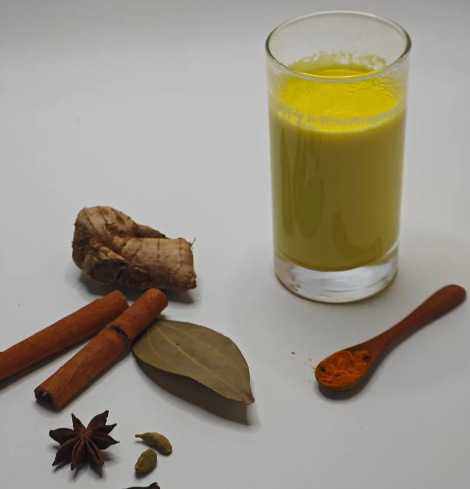

Paachana and Deepana in Patna

Most people imagine Panchakarma begins on a massage table. In the classical plan it begins much earlier, at the dining table and with a few bitter powders. Before any oil goes into or onto the body, the physician asks one question: is this person's digestion strong enough to handle what comes next? If the answer is no, the first step is paachana and deepana.
What the words mean
Paachana (पाचन) comes from the root pac, to cook or digest. A paachana substance helps the body digest what is already sitting undigested in it, the heavy, sticky residue Ayurveda calls ama. Deepana (दीपन) means kindling, the way one fans a fire. A deepana substance strengthens agni, the digestive and metabolic fire, so that new food is processed properly. Many herbs do both, which is why clinicians usually speak of them together.
In plain terms: paachana clears the backlog, deepana improves the engine. Together they make the gut ready for the internal oleation and cleansing that follow.
Where this idea comes from
The concept of ama and agni runs through the oldest Ayurvedic texts. The Charaka Samhita, the central text of Ayurvedic internal medicine, which scholars generally place in its surviving redacted form between roughly the 2nd century BCE and the 2nd century CE (with later additions by Dridhabala), describes ama as the product of weak agni and treats it as a root of many disorders because it obstructs the body's channels (srotas). The text lists fasting (langhana), digestive herbs (paachana) and fire-kindling herbs (deepana) among the first responses to ama.
Vagbhata's Ashtanga Hridaya, compiled around the 6th to 7th century CE, organises these ideas compactly and became the standard teaching text in Kerala and beyond. Later commentators, including Chakrapanidatta in the 11th century, explained the sequence used today: when ama is present, lighten and digest first, then oleate, then sweat, then cleanse.
Here it helps to separate tradition from documented history. The texts themselves are real and dated within broad ranges by scholars. The idea that the sages received this knowledge directly is a matter of tradition and faith, not historical evidence. What we can say with confidence is that the preparatory logic has been taught continuously in Ayurvedic schools for well over a thousand years and is part of the standard BAMS curriculum today.
How it is understood to work
The classical logic
Ayurveda holds that oil given to a body full of ama does not reach the tissues. It mixes with the residue, worsens heaviness and can cause nausea, loss of appetite, bloating or skin eruptions. So the physician first looks for the classic signs of ama: a coated tongue, heaviness after meals, poor appetite, sluggish bowels, a dull taste in the mouth, foul flatulence, lethargy and body ache without exertion. Paachana and deepana are continued until these signs ease and the reverse appears: clear hunger at meal times, a cleaner tongue, lightness and regular bowels.
Herbs commonly used for this purpose include trikatu (dry ginger, black pepper and long pepper), chitrakadi vati, hingvashtak churna, panchakola, musta and shunthi in warm water. The choice depends on the person. A strongly pitta-dominant patient with acidity is not given the same fiery formula as a cold, heavy kapha-type patient.
What modern research says
Honestly, very little. There are laboratory and small clinical studies on individual spices such as ginger and black pepper and their effects on digestion, gastric emptying and nausea, but there is no high-quality trial that tests the paachana phase itself as a step before Panchakarma, and no validated laboratory marker for ama. Some researchers have tried to map ama onto ideas such as poor metabolic clearance or low-grade inflammation, but these are hypotheses, not established science. We present paachana as a classical safety and preparation step, not as a proven treatment on its own.
Who it may suit
- People starting any full Panchakarma programme whose digestion shows signs of ama.
- Those with heaviness, bloating, poor appetite or sluggish bowels, which are common in gut and metabolic concerns we see in Patna.
- Patients who will be given snehapana (internal ghee), since ghee taken over a weak agni is poorly tolerated.
- People whose tongue coating and appetite suggest that cleansing would be premature.
Who should be careful or avoid it
- Pregnancy and breastfeeding: several deepana herbs are hot and pungent. Only a physician should decide.
- Active acidity, ulcers or gastritis: fiery spices can aggravate these. A gentler protocol is needed.
- Very weak, underweight or elderly people: fasting and strong digestives may deplete them.
- Children: doses and choices are different and decided only after examination.
- People on prescription medicines, especially for diabetes, blood pressure, thyroid or blood thinning: some herbs and dietary changes can interact. Never stop or change a prescribed medicine on your own. Tell the doctor everything you take.
- Diabetes: fasting and diet changes can alter blood sugar. Monitoring is essential.
What happens at Sabka Ved Wellness
Consultation first
Every programme starts with a consultation with Dr. Aditya Kunal (BAMS). He takes a history of your digestion, sleep, bowel habits, medicines and existing reports, examines the tongue, pulse and abdomen, and assesses your prakriti (constitution) and current dosha state. If ama is present, paachana and deepana are prescribed before anything else. If digestion is already clear, this phase may be very short or skipped.
During the paachana days
This phase is mostly lived at home. You are given specific herbs to take at set times, usually before or after meals with warm water. Diet is simplified: warm, freshly cooked, easy food such as moong dal khichdi, thin vegetable soups, rice gruel and cumin or ginger water. Curd at night, fried snacks, heavy sweets, refrigerated leftovers, cold drinks and daytime sleep are avoided. Some patients are asked to eat only when genuinely hungry.
You report back daily or every other day. The doctor checks hunger, tongue, bowel pattern and energy. When the signs of nirama (free of ama) appear, the next stage, usually snehapana, is planned.
Aftercare and diet
The lessons of these days often outlast the whole programme. Many patients notice for the first time how heavy dinners or late meals affect them. We encourage a fixed meal rhythm and a lighter evening meal even after Panchakarma ends.
Why this phase matters for the cost of the programme
Paachana itself uses inexpensive herbs. Its value is in what it prevents. Starting oleation or vamana on a body full of ama wastes litres of medicated ghee and oil, makes the patient uncomfortable and can force the programme to stop. Doctor time spent reading your digestion daily is the real cost here. Because we do not run fixed packages, the length of this phase is decided by your body, and the overall plan, including any costs, is explained at consultation. We do not publish prices online because no two programmes are the same.
A note on expectations
Paachana is not a cure for any disease, and lighter digestion during these days is not proof that the full programme will resolve a condition. It is preparation, done properly. If you have a serious illness, are pregnant, or are on long-term medicines, consult first so that the plan fits safely around your current care.
Start with the right first step
If you are considering Panchakarma in Patna and are not sure whether your digestion is ready, the consultation is where that question gets answered. You can request an appointment or book a consultation with Dr. Aditya Kunal online. Patients from outside Bihar often start with an online consultation and begin the paachana phase at home before travelling.
Sources
We also serve patients from

Preparation, therapy, recovery. In that order.


Related therapies
Pages that pair naturally with this one.


Questions about Paachana and Deepana

Not exactly. Fasting (langhana) is one tool that may be used. Paachana mainly means taking digestive herbs and eating light, warm food until the signs of ama clear. Whether you fast, and how much, is decided by the doctor after assessing your strength.
Usually between 3 and 7 days, but it depends on how quickly your appetite, tongue and bowels show clear digestion. Some patients need only a day or two; others need longer.
We do not advise it. The right herbs and diet depend on your constitution, any acidity or ulcer history, your medicines and conditions such as diabetes. A wrong choice can aggravate symptoms.
No. Never stop or alter prescribed medicines on your own. Tell Dr. Aditya Kunal everything you take so the plan can work safely alongside it.
Simple, warm, freshly cooked food such as moong dal khichdi, rice gruel, soups and cumin or ginger water, with fried, heavy, cold and leftover foods avoided. The exact diet is given at consultation.